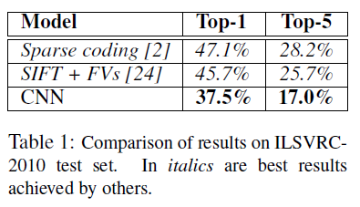

简介
ImageNet Classification with Deep Convolutional Neural Networks 发表在NIPS2012上面，在当时引起了不小的轰动，因为这篇文章的方法在ImageNet LSVRC-2010数据集上的分类效果比其他分类效果好很多，Top 5的错误率由25%降到17%。
这篇文章的主要贡献如下：
- 训练了一个大型的卷积神经网络并且效果是目前为止所有方法里面最好的；
- 实现了一个基于GPU的2D卷积网络，并且我们使用该框架进行了CNN的训练。文章对CNN进行了很多的优化，提高了网络的训练速度和分类效果。
实验数据集使用ImageNet。ImageNet拥有超过1500万张高清图片，图片有22000多个类别。从2010年开始，ILSVRC(ImageNet Large-Scale Visual Recognition Challenge)每年都会举行一次。在ImageNet数据集上，我们使用两个评价标准:top-1和top5。top-1错误率是指测试的图片的真正标签没有出现在所预测出的前五个标签中的图片的比例，也就是说，连续预测5次都没有预测正确的图片的比例。ImageNet里面的图片分辨率不一，需要将图片通过缩小和裁剪得到256x256像素的图片，除此之外不对图片进行任何处理。
架构
框架架构如下图所示，共8层，五个卷积层和三个全连接层，最后是一个1000-way的softmax分类器，将图片分成1000个类别。该实验在两个GPU上进行运算，从图中可以看到，第二，第四和第五个卷积层只和在同一块GPU上的上层连接，因此减少了GPU之间数据的交换，提高了运算效率。全连接层的神经元与上一层的全部神经元相连接。局部响应正则化层在第一和第二卷积层之后，pooling层在第一第二响应正则化层之后和第五卷积层之后。ReLU用于五个卷积层和三个全连接层的输出。
第一个卷积层使用96个11x11x3的卷积核处理输入的224x224x3的图片，步长为4个像素；第二个卷积层使用256个5x5x48大小的卷积核。第三个卷积层有384个3x3x256的卷积核；第四个卷积层有3843x3x192的卷积核。第五个卷积层使用256个3x3x192的卷积核。全连接层每层有4096个神经元。
ReLU ：对神经元输出进行建模的标准方法是将它的输入x看成是f的函数：$f(x)=tanh(x)$或者sigmod函数，在用梯度下降法训练的时候，这些饱和非线性函数要比非饱和非线性函数慢很多，比如$f(x)=max(0,x)$，我们称这类非线性神经元为改正的线性单元（Rectified Linear Units），如下图所示，其训练速度比tanh函数要快很多
Training on Multiple GPUs : 框架使用多个GPU并行计算，并且GPU之间可以直接访问对方memory，不用经过主机内存。此外，框架还有一个trick：GPU通信只在某些层进行，因此可以提高运算效率。
Local Response Normalization : 局部响应归一化有助于提高泛化能力，计算公式如下：
Overlapping pooling : 传统的pooling方法只对相邻单元处理并且有重合，本文对pooling层进行了部分重合，减少了过拟合，提高了分类效果。
Reducing Overfitting
该方法的神经网络有6000万个参数，虽然ILSVRC有1000个类别，但是还是无法避免过拟合的问题，因此本文采用了两种方式来避免过拟合。
Data Augmentation
本文使用了两种方法来实现数据扩展，两种方法只需要很小的计算量，而且是在CPU上运算的，并不会占用GPU的计算资源。
第一种是图片平移和水平翻转（image translations and horizontal reflections）,我们从246*256的图片中提取出来5个224x224的图片（四个角+一个中心），同时水平翻转后再提取出来五个子图片，共10个图片，在softmax层对这些图片分别进行预测，对预测结果求平均值作为图片的预测结果。
第二种是改变图片的RGB通道的强度，对图片进行PCA分析，图片的像素值（与之对应的特征值）（服从均值为0标准为0.1的高斯分布的随机数），因此，对于每个RGB像素
Ixy=
对它们添加如下量：其中，pi和是3*3协方差矩阵的RGB像素值的特征向量和特征值，a是前面提到的随机变量，一张图片在训练过程中a是固定的，这个方法能够捕捉到自然图片的重要属性，并且使top-1错误率降低了1%。
Dropout
后面会细讲。
训练过程
使用随机梯度下降法进行训练，batch=128，momentum=0.9， weight decay=0.0005，权重w的更新方式如下：
i是迭代系数，v是动量值
每层权值的初始值为服从均值为0，标准差为0.01的高斯分布的随机数，第二，四，五卷积层和三个全连接层的biases均设置为1，其他设为0。所有层的学习率都是一样的，在训练时会调整，调整的启发式算法是：如果当前学习率下验证集的错误率不在改变时，就将学习率除以10，总共调整三次后停止，用120万张照片训练了大约90个循环。
训练结果如下图所示：

结果分析
如下图所示，是网络学习到的卷积核，网络学习到了不同频率，方向和颜色块的核，框架中的GPU连接方式，使得GPU产生了特化，上半部分的核是GPU1学习得到的，下半部分的核是GPU2学习得到的，两者有很大的区别，GPU2 感知到了颜色而GPU1没有，这种现象每次均会发生。
我们可以通过计算两张图片最后一层生成的4096维向量的欧氏距离的大小来确定他们的相似度，距离越小，图片的相似度越高。
此外，通过欧式距离计算向量的相似度效率不高，我们可以通过训练一个auto-encoder来将这些向量压缩为短的二值编码来提高计算效率。这种图片搜索方式比直接将auto-encoder用于原始的像素效果要好，因为后者没有利用图片的标签信息只是检索有相似的边的模式，而不是检索语义上的相似。
此外，为了简化实验，本文并没有采用任何非监督的预训练，因为我们已经有足够的计算能力来增大网络的大小，因此不需要增加有标记数据的数量。